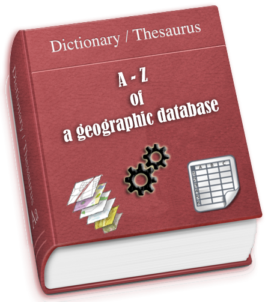
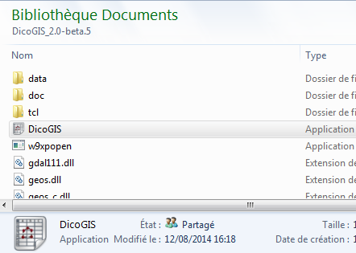
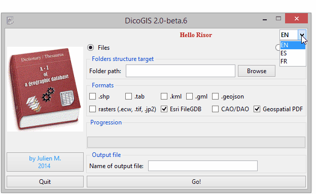

DicoGIS: the 3-clic geodata dictionary¶
Or how to easily get detailed and structured information about its GIS data in a few minutes. Introducing a simple tool without any pretention except give a hand to GIS fellows to manage data.

In a nutshell¶
DicoGIS creates an Excel workbook (2003) with technical metadata gathered from geographic data (files and PostGIS database). Available as a Python script (see requirements below) or as a Windows executable without installation required, so you can use take it on a USB device for example.

Some useful cases:
you receive a dark database of files and you would like to know what there’s inside;
before you deliver your geographic data to a non-specialist superior / colleague / client / partner / alien you want to give a description of data trasmitted, just because it’s a good practice and you are a good GIS person.
Technical specifications¶
Formats handled are potentially the entire list of GDAL and OGR but for now I just implemented these ones:
vectors: shapefile, MapInfo tables, GeoJSON, GML, KML
rasters: ECW, GeoTIFF, JPEG
“flat” databases: Esri File GDB, Spatialite
CAD: DWG (only listing), DXF
Map documents: Geospatial PDF
DicoGIS is localized in 3 languages (Français, Anglais et Espagnol) but every one can add a translation or custom the existing texts/labels.
Talking about perforamnces, it’s always very dependant on the computer but to give an idea, it needs 30 seconds for:
40 vectors,
10 rasters (which represent like 90 Mo in total),
7 FileGDB contenant sixty vectors,
and some DXF.
How to use it¶
Download the latest version:
Unzip it and launch DicoGIS.exe / DicoGIS.py

Switch language as you need

Depending on the kind of data you want to list:
For files:
Pick the parent folder where you data is stored: listing starts and progress bar is moving until the end of listing
Choose the expected formats

For PostgreSQL / PostGIS (database), it’s more or less the same story but you have to give the connection settings:

Launch and wait: save the output file where you want.

Have a look to the output file and apply some Excel enhancements (convert to a newer version if you have, use a default style, etc.)
Optionnaly, check the log file DicoGIS.log (there is a lot of information inside it, believe me ^^).
What about the results?¶
The output workbook contains technical metadata about the data found, organized in tabs corresponding on the type of data. Have a look to the matrix I did to see what information according the formats.